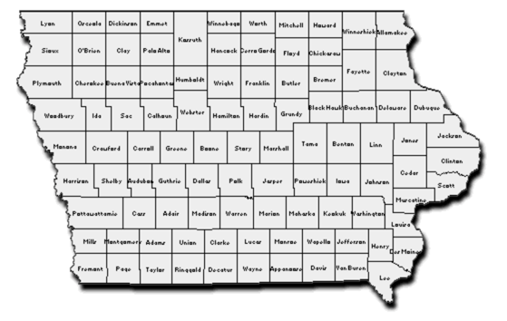

Andrew Yang needs YOU.
JOIN THE FIGHT IN IOWA
Andrew Yang needs every boot on the ground on Iowa these coming months to win this crucial early caucus. Whether you live near or far, you can join the fight today by joining a caravan of fellow Yang supporters to join the greatest volunteer show of force this state has ever seen.
We’ve already seen that Andrew Yang has the most dedicated grassroots supporters in this race by a long shot. Let’s show the world together!
Join the fight! We need YOU, soldier.
Register Today
The process is simple. If you’re an Andrew Yang volunteer coming from out-of-state, you tell us who you are, and we’ll match you with carpools (“caravans”), housing, and logistics to do on-the-ground canvassing and to connect with other Yang supporters within Iowa and from around the country.
Once your application is submitted, our team of organizers will contact you and help set up details on logistics, strategy, coordination with our volunteers in Iowa, and surviving in the cold winter.
Andrew Yang supporters are a truly unique group. When you get them together under a common purpose, amazing things happen. It’s gonna be a blast.
Starting a Caravan
Anyone can start a caravan. If you live in a neighboring state, all you need is a car or a bus ticket. If you don't have one, we can match you up with someone who does. We recommend at least two people go together; bring a friend and join the party.
It's that simple. You'll need to make sure to bring WARM CLOTHES and a CAMPAIGNING SPIRIT, but the rest you can work with us on; where to go, who to meet, which precints we need to hit.
Fill out our application process by clicking here. We'll get your details on who you are, what you need, and what you can provide. Ultimately this effort is about standing up and being counted; If we get more boots on the ground than any other candidate, that shows the nation what kind of candidate he is and the tenacity of his supporters.